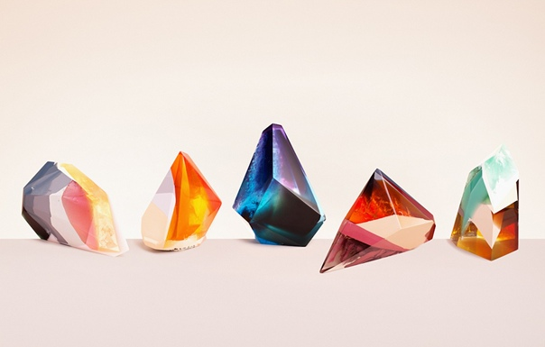

Внешний вид
Эти рептилии вырастают до 20-30 см в длину. Язык толстый, раздвоенный. Два ярких глаза с подвижными веками, 4 конечности с тонкими пальцами, на конце которых растут когти со слегка закруглёнными концами, а также массивный (при размерах тела) хвост. Тело покрыто прочными пластинами, идущими от головы до хвоста. Эта броня покрывает как спину существа, так и брюшко. На шее и лапках чешуя очень гладкая и уязвимая.
Основным достоинством эзо считаются их «декоративные» элементы в виде крохотных кристаллов. Эти кристаллы растут в хаотичном, но в то же время красивом порядке. Со временем они выходят из-под пластин брони, а также отрастают вокруг головы («корона») и на кончике хвоста. В отличие от многих других ящерок, хвост этого вида крупнее и толще.
Физиология
Эзо завоевали интерес благодаря своему уникальному свойству распределять вещества съеденного. При приёме пищи эта ящерка забирает все нужные её организму вещества, а ненужные отправляет наружу, но не через рот или основную выделительную систему. С помощью пищеварительных ферментов яды и другое «лишнее» связывается и выводится из тела через выделительные железы на шкуре, что расположены под их бронёй и выглядят как незаметные обычному взгляду скважинки. Отфильтрованные ненужные вещества покидают тела в виде капель, которые со временем быстро затвердевают и становятся красивыми на вид кристаллами. В основном они очень яркого цвета вроде токсично-зелёного или ярко-красного. Со временем кристаллы становятся крупнее и тяжелее, из-за чего эзо приходится от них избавляться, намеренно падая со стен или барахтаясь среди камней. Свойств у эссенции, из которой состоят кристаллы, немало. Эзо всеядны и могут съесть любой гриб, насекомое или яйцо, поэтому эффект у кристаллов будет разный. Это может быть как обычный краситель, так и чистейший яд, как обработанные наркотики, так и обычная пряная специя. Алхимики готовы чуть ли не продать душу за хотя бы одного живого эзо, ведь именно в алхимии они раскрывают весь свой потенциал. Алхимики прикармливают их определёнными травами или грибами и получают обработанную эссенцию в виде кристаллов, которые неплохо растворяются в жидкостях. Иными словами, данные рептилии помогают создавать более качественные зелья и яды. Можно поэкспериментировать и использовать ящериц в создании алкогольных напитков или наркотиков. В особо трудные времена эзо могут голодать в течение месяца. Некоторые питательные вещества они сохраняют в своём хвосте «про запас». Взрослые особи способны за один раз съесть пищи в размере трети собственного веса. Низкий метаболизм и относительно низкая температура тела способствуют уменьшению потребности в регулярном питании. Самки откладывают до 12 яиц. Яйца покрыты мягкой пергаментоподобной оболочкой. Самка долгое время охраняет кладку. Детёныши вылупляются спустя месяц с уже сросшимся внутри панцирем, который со временем укрепляется.
Срок жизни в неволе • 2-4 года и зависит от степени закармливания ящериц ядовитой пищей. В природе живут в два раза больше за счёт того, что самостоятельно контролируют свою диету. Употребление ядовитых растений и насекомых им нужно лишь ради самозащиты: не всякий хищник осмелится попробовать на вкус покрытую ядовитыми кристаллами добычу.
Из исследований жителей Наат-Тхаес:
Самки и самцы этих ящериц отличаются расцветкой. Пластины и шкура самок более бледная, в то время как у самцов преобладают более тёмные и насыщенные оттенки. Частота появления самок из кладок • 70%. Можно сказать, что женский пол доминирует благодаря более тучным размерам. Самцы славятся подвижностью.Укусы эзо довольно редки и обычно являются следствием неосторожного обращения с ящерицей при отлове или содержании в неволе. Несмотря на то, что эссенция эзо на ощупь твёрдая, о неё очень легко испачкаться. Некоторые кристаллы могут вызвать раздражение кожи, а потому лучше работать в перчатках, а после обязательно помыть руки. От хвоста до спины кристаллы снимаются с лёгким усилием, но без вреда для эзо. Этих ящериц вполне возможно приручить, но с такой ценной рептилией по улице ходить небезопасно.
Получить яд из этих рептилий можно не только из кристаллов. Эзо относятся к «ядозубам» и имеют собственный яд. К сожалению, он довольно слабый, но у самок в период охраны кладки эффект яда усиливается, а его количество увеличивается. Если укусит, то тут не только палец онемеет, но и вся кисть. Любые яды, попавшие в тело ящерицы не через пищеварительную систему, а через кровь, отравят её.
Мясо эзо жестковато, но при должной отбивке, стерилизации и готовке вполне ничего. На вкус сладковатое. Не стоит есть голову, там ядовитые железы.
Нажиться на эзо может любой, лишь бы удача и хорошая реакция были при себе. Одна такая ящерка может обеспечить ловца как минимум несколькими месяцами безбедного житья, поэтому эзо и прозвали «халявой». Цены на них очень высоки, а на поверхности вообще удваиваются.
Умения
• Основным умением рептилии является её пищевое распределение в организме. Благодаря своей необычной физиологии она распределяет съеденное на полезные, бесполезные и вредные вещества. Полезные вещества отправляются дальше в организм, пока остальное выходит через железы на теле в виде быстро застывающих капель эссенции. Это может быть как чистый яд, так и обработанный краситель и т.д. Благодаря этому эзо может есть всё подряд и не беспокоиться о риске возможного отправления. • Всеядны. • Малы и проворны. Эзо могут передвигаться не только по горизонтальным, но и по вертикальным неровным поверхностям, в чём им помогают хвост и цепкие коготки. • Могут хорошо замаскироваться благодаря неровному панцирю, сливающемуся с рельефом камней в пещерах. • Могут укусить. От укуса появляется воспаление и онемение части тела. Для взрослого человека эффект продлится 30-40 минут. Не смертельно, однако свои неудобства доставляет. • Взрослые эзо имеют при себе надёжную защиту в виде сросшегося пластинчатого панциря. Единственные незащищённые места находятся в нижней части головы, шее и конечностях. Остальное тело хорошо защищено. В большинстве случаев эта защита также уберегает эзо от невнимательных двуногих, которые ненароком наступают на затаившуюся рептилию. Сама ящерица не пострадает, а вот броня может дать трещины.
Слабости
• Тонкая шкура в нижней части головы, на шее и конечностях. • В неволе, если часто кормить эзо ядами, срок её жизни уменьшается как минимум вдвое за счёт износа организма. • Сломанные или треснувшие пластины панциря не восстанавливаются. • Уязвимы для ядов, которые попали в тело не через пищеварительную систему. • Часто испражняются тем, что не смогло полностью перевариться.
Распространение
Проживают исключительно в тёмных и очень глубоких пещерах. Лишь изредка можно встретить их на старых заваленных подземных руинах. 85% эзо обитает к северу от пустыни Золотой Гребень.
Добыча
Мясо, шкура, пищеварительные железы в крайнем случае вполне можно использовать как антидоты. Живой эзо — источник большого разнообразия алхимических ингредиентов и ядов. Может стать невероятно ценным живим инструментом в алхимических целях.
